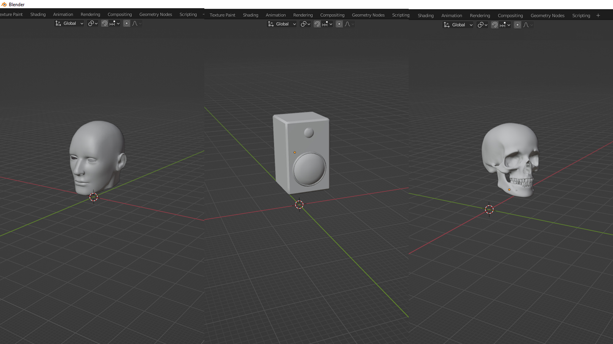
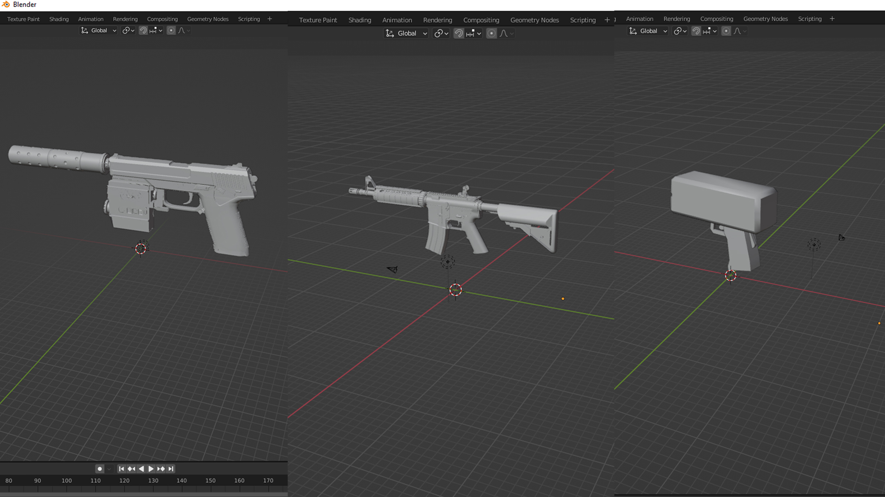
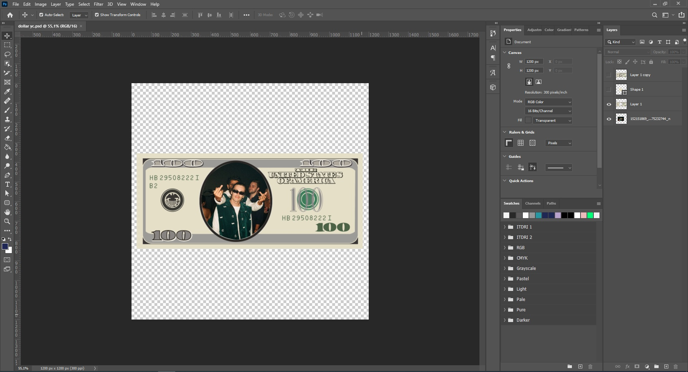
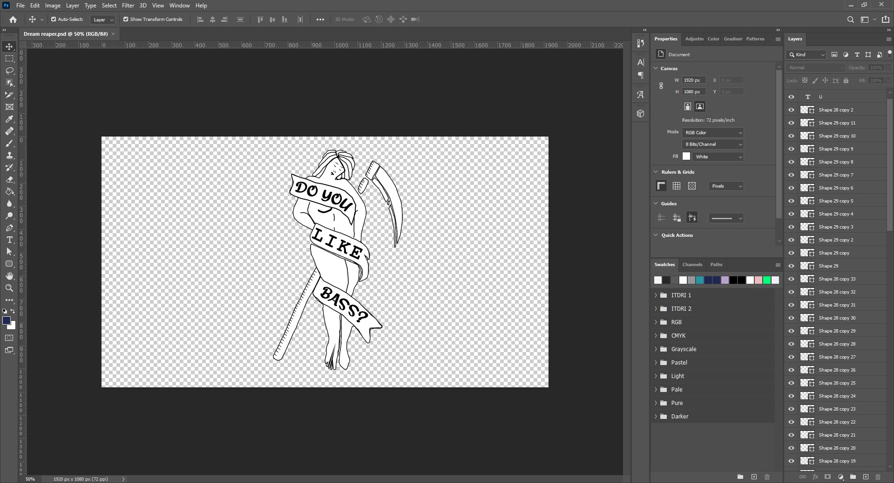
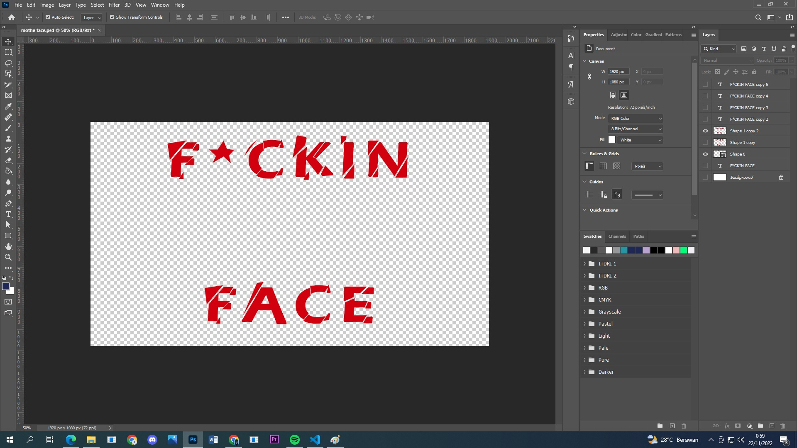
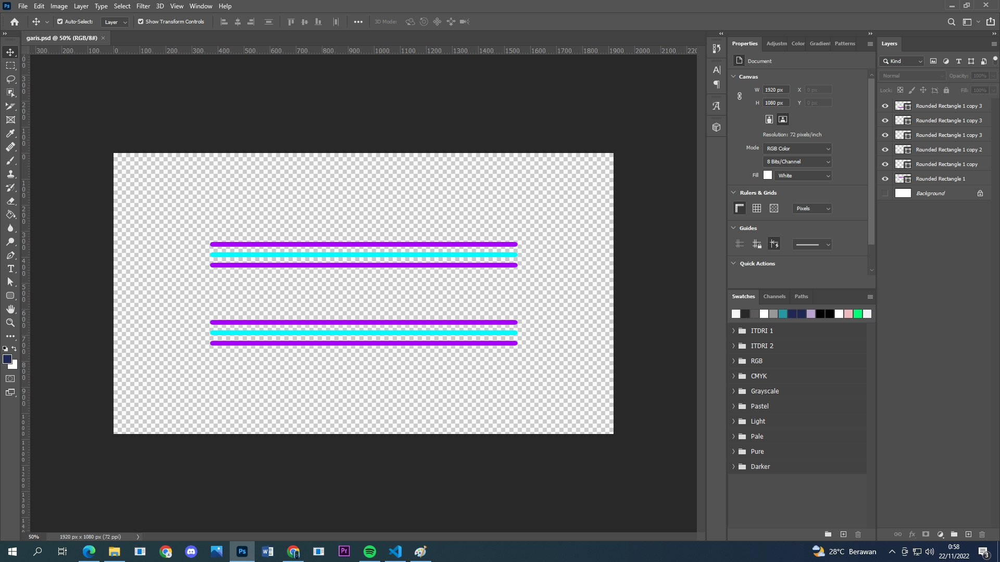
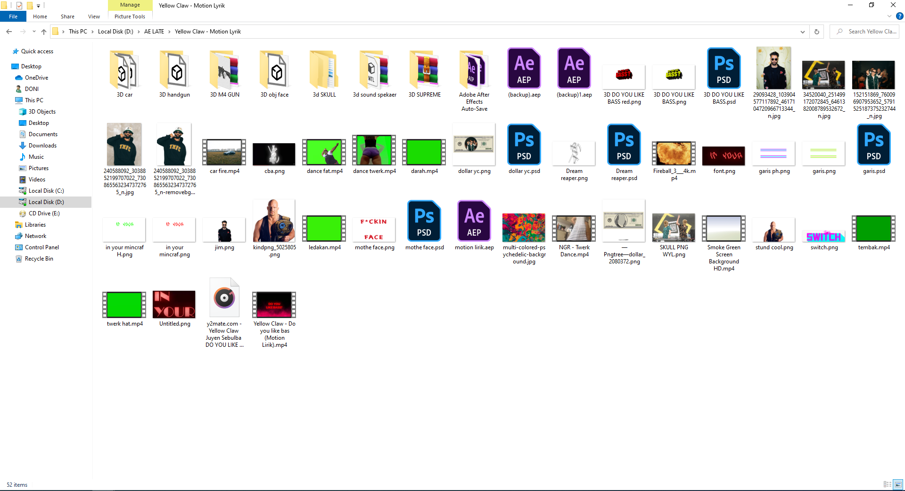

Works
Portfolio Single
Portfolio
Motion Lyrics Yellow Claw - Do You Like Bass
YellowClaw adalah Duo Musisi DJ yang berasal dari Belanda dengan bergenre EDM (Electronic Dance Music). Do You Like Bass salah satu album dari "Amsterdam Trap Music Special Japan Edition" yang di rilis pada 8 September 2017, melalui youtube official yellowclaw.
Lagu Do You Like Bass kolaborasi antara YellowClaw dan Juyen Sebulba dengan label rekaman Barong Family. Barong Family merupakan label rekaman yang dibuat oleh YellowClaw setelah keluar dari label Spinnin Records. Nama Barong diambil dari nama dewa yang ada di Bali. yang mereka pilih sebagai nama labelnya karena mereka memiliki rencana kedepan ketika mereka sudah cukup tua dan akan mengabiskan waktunya di Bali.
Musik Video diatas ialah karya dari vngnc aka izzy (Yudhistira Israel Wijanyanegara). yang nantinya aku coba menirukan dengan maksud tujuan untuk belajar lebih luas lagi tentang Motion Graphics dan memperdalam kemampuan menggunakan after Effects. izzy merupakan seorang seniman 3D Artis, Motion Designer, Dj, Vfx (Visual Effect) dan Vj (Visual Jockey). sudah banyak karya izzy di Internet dengan membuat beberapa video untuk musisi tanah air seperti Danilla Riyadi, Aya Anjani, Feast, Jevin Julian.
Project ini sebenarnya projectkan iseng-iseng yang mana dibuat saat waktu luang ketika magang di Telkom. mengerjakan video motion lyrics ini pada saat closingan project Digital Learning Institute, karna belakangan ini sering sekali membuat Motion Graphics untuk kebutuhan beberapa project pada waktu magang di Telkom. walaupun aku di Telkom Magang sebagai Desain Grafis. awal membuat video motion lyrics yellowclaw karna saat Medesain suka sambil mendengarkan lagu-lagu dari YellowClaw. tiba-tiba seketika kepikiran ingin mencoba membuatnya setelah melihat dan mendengar lagu beberapa kali "Do You Like Bass - YellowClaw"
Tujuan Membuat Video Motion Lirik
- Penasaran Dan Mengisi Waktu Luang Saat Closingan Project Magang
- Ingin Memperdalam Motion Graphics Dan Sejauh Mana Kemampuan menggunakan After Effects
- Ingin Mencoba Mengulik Software 3D Blender
- Iseng-iseng Memperbanyak Portfolio Motion Graphics
- Mecoba mengikuti Style Motion Lyrics Yang Dibuat Oleh Izzy
3D Modeling Yang Digunakan
 {kind=link}
{kind=link}
Desain Untuk Kebutuhan Asset Motion Graphics
Dollar Spin
{kind=link}
Dream Reaper
{kind=link}
For Fliker Text
{kind=link}
For Text Motion
{kind=link}
Hasil Motion Lyrics Do You Like Bass
Video diatas ini dikerjakan kurang lebih sepertinya 4 Minggu, dimana mengerjakan disaat aku lagi magang dan meyempatkan diri untuk mengerjakannya. tetapi dalam waktu 4 minggu mengerjakannya juga tergantung kondisi dan mood, karna malamnya aku kuliah.
Folder Dan Timeline
Dibawah ini gambaran folder dan timeline pada project iseng-iseng untuk membuat motion lyrics yellowclaw - do you like bass. aku juga mengambil beberapa asset video green screen dan video lainnya diyoutube terlihat gambar pada folder diatas. untuk timeline di after fffect mungkin akan terlihat lebih banyak lagi kalau tidak di precompose. aku juga ingin menekankan atau disclaimer bahwa pada project iseng-iseng ini murni untuk aku belajar lebih dalam lagi mengenai motion graphics, after effect, 3D Blender dan tidak sama sekali aku komersialkan.
{kind=link}